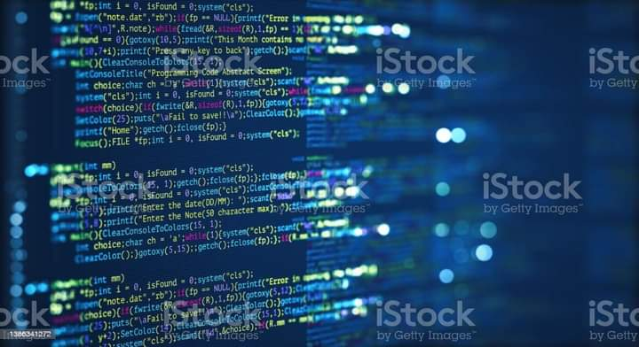

Great Computer Programming Quote’s in the World
“People always fear change. People feared electricity when it was invented, didn’t they?
People
feared
coal, they feared gas-powered engines. There will always be ignorance, and ignorance leads to fear. But
with
time, people will come to accept their silicon masters.”
As Bill Gates once warned, computers have indeed become our silicon masters, pervading nearly every
aspect
of our modern lives.
As a result, some of the greatest minds of our time have pondered the
significance
of computers and software on the human condition.
Following are 101 great quotes about computers,
with
an emphasis on programming, since after all this is a software development site.
Computers
“Computers are useless. They can only give you answers.”
(Pablo Picasso)
“Computers are like bikinis. They save people a lot of guesswork.”
(Sam Ewing)
“They have computers, and they may have other weapons of mass destruction.”
(Janet Reno)
“That’s what’s cool about working with computers. They don’t argue, they remember everything, and they
don’t
drink all your beer.”
(Paul Leary)
“If the automobile had followed the same development cycle as the computer, a Rolls-Royce would today
cost
$100,
get a million miles per gallon, and explode once a year, killing everyone inside.”
(Robert X. Cringely)
Computer Intelligence and its working
“Computers are getting smarter all the time. Scientists tell us that soon they will be able to talk to
us.
(And by ‘they’, I mean ‘computers’. I doubt scientists will ever be able to talk to us.)”
(Dave Barry)
“I’ve noticed lately that the paranoid fear of computers becoming intelligent and taking over the world
has
almost
entirely disappeared from the common culture. Near as I can tell, this coincides with the
release
of MS-DOS.”
(Larry DeLuca)
“The question of whether computers can think is like the question of whether submarines can swim.”
(Edsger W. Dijkstra)
“It’s ridiculous to live 100 years and only be able to remember 30 million bytes.
You know, less
than a
compact disc. The human condition is really becoming more obsolete every minute.”
(Marvin Minsky)
Software Patents
“The bulk of all patents are crap. Spending time reading them is stupid. It’s up to the patent owner to
do
so, and to enforce them.”
(Linus Torvalds)
Complexity Quote’s
“Controlling complexity is the essence of computer programming.”
(Brian Kernigan)
“Complexity kills. It sucks the life out of developers, it makes products difficult to plan, build and
test,
it introduces security challenges,
and it causes end-user and administrator frustration.”
(Ray Ozzie)
“There are two ways of constructing a software design. One way is to make it so simple that there are
obviously no deficiencies.
And the other way is to make it so complicated that there are no obvious
deficiencies.”
(C.A.R. Hoare)
“The function of good software is to make the complex appear to be simple.”
(Grady Booch)
Hardware of Computer
“Hardware: The parts of a computer system that can be kicked.”
(Jeff Pesis)

Software or Applications
S
“Most software today is very much like an Egyptian pyramid with millions of bricks piled on top of each
other,
with no structural integrity, but just done by brute force and thousands of slaves.”
(Alan Kay)
“I’ve finally learned what ‘upward compatible’ means. It means we get to keep all our old mistakes.”
(Dennie van Tassel)
Internet for Coding
“The Internet? Is that thing still around?”
(Homer Simpson)
“The Web is like a dominatrix. Everywhere I turn, I see little buttons ordering me to Submit.”
(Nytwind)
“Come to think of it, there are already a million monkeys on a million typewriters, and Usenet is
nothing
like Shakespeare.”
(Blair Houghton)
Software Developer in Industry
“The most amazing achievement of the computer software industry is its continuing cancellation
of
the
steady and staggering gains made by the computer hardware industry.”
(Henry Petroski)
“True innovation often comes from the small startup who is lean enough to launch a market but lacks the
heft
to own it.”
(Timm Martin)
“It has been said that the great scientific disciplines are examples of giants standing on the shoulders
of
other giants.
It has also been said that the software industry is an example of midgets standing on
the
toes of other midgets.”
(Alan Cooper)
“It is not about bits, bytes and protocols, but profits, losses and margins.”
(Lou Gerstner)
“We are Microsoft. Resistance Is Futile. You Will Be Assimilated.”
(Bumper sticker)
Software Demos
“No matter how slick the demo is in rehearsal, when you do it in front of a live audience, the
probability
of a flawless presentation
is inversely proportional to the number of people watching, raised to the
power of the amount of money involved.”
(Mark Gibbs)
.jpeg)
Trust
“The city’s central computer told you? R2D2, you know better than to trust a strange computer!”
(C3PO)
“Never trust a computer you can’t throw out a window.”
(Steve Wozniak)
Operating Systems
“There are two major products that come out of Berkeley: LSD and UNIX. We don’t believe this to be a
coincidence.”
(Jeremy S. Anderson)
“19 Jan 2038 at 3:14:07 AM”
(End of the word according to Unix–2^32 seconds after January 1, 1970)
“Every operating system out there is about equal… We all suck.”
(Microsoft senior vice president Brian Valentine describing the state of the art in OS security, 2003)
“Microsoft has a new version out, Windows XP, which according to everybody is the ‘most reliable Windows
ever.‘
To me, this is like saying that asparagus is ‘the most articulate vegetable ever.‘ “
(Dave Barry)
.jpeg)
Ease of Use for codings
“Just remember: you’re not a ‘dummy,’ no matter what those computer books claim. The real dummies are
the people who–though technically expert–couldn’t design hardware and
software that’s usable by
normal
consumers if their lives depended upon it.”
(Walter Mossberg)
“Software suppliers are trying to make their software packages more ‘user-friendly’…
Their best
approach so far has been to take all the old brochures and
stamp the words ‘user-friendly’ on the
cover.”
(Bill Gates)
“There’s an old story about the person who wished his computer were as easy to use as his telephone.
That wish has come true, since I no longer know how to use my telephone.”
(Bjarne Stroustrup)
User’s
“Any fool can use a computer. Many do.”
(Ted Nelson)
“There are only two industries that refer to their customers as ‘users’.”
(Edward Tufte)
Programmers of Websites
“Programmers are in a race with the Universe to create bigger and better idiot-proof programs, while the
Universe is trying to create
bigger and better idiots. So far the Universe is winning.”
(Rich Cook)
“Most of you are familiar with the virtues of a programmer. There are three, of course: laziness,
impatience, and hubris.”
(Larry Wall)
“The trouble with programmers is that you can never tell what a programmer is doing until it’s too
late.”
(Seymour Cray)
“That’s the thing about people who think they hate computers. What they really hate is lousy
programmers.”
(Larry Niven)
“For a long time it puzzled me how something so expensive, so leading edge, could be so useless.
And
then it occurred to me that a computer is a stupid machine with the ability to do incredibly smart
things,
while computer programmers are smart people with the ability to do incredibly stupid things.
They are, in short, a perfect match.”
(Bill Bryson)
“Computer science education cannot make anybody an expert programmer any more than studying brushes and
pigment can make somebody an expert painter.”
(Eric Raymond)

“A programmer is a person who passes as an exacting expert on the basis of being able to turn out, after
innumerable punching,
an infinite series of incomprehensive answers calculated with micrometric
precisions
from vague assumptions based on debatable figures taken from inconclusive documents and
carried out on instruments of problematical accuracy by persons of dubious reliability and questionable
mentality for the avowed purpose of annoying and confounding a hopelessly defenseless department that
was
unfortunate enough to ask for the information in the first place.”
(IEEE Grid newsmagazine)
“A hacker on a roll may be able to produce–in a period of a few months–something that a small
development
group (say, 7-8 people) would
have a hard time getting together over a year. IBM used to report
that
certain
programmers might be as much as 100 times as productive as other workers, or more.”
(Peter Seebach)
“The best programmers are not marginally better than merely good ones. They are an order-of-magnitude
better, measured by whatever standard:
conceptual creativity, speed, ingenuity of design, or
problem-solving ability.”
(Randall E. Stross)
“A great lathe operator commands several times the wage of an average lathe operator, but a great writer
of
software code
is worth 10,000 times the price of an average software writer.”
(Bill Gates)
Quality of Codings
“I don’t care if it works on your machine! We are not shipping your machine!”
(Vidiu Platon)
“Programming is like sex: one mistake and you’re providing support for a lifetime.”
(Michael Sinz)
“There are two ways to write error-free programs; only the third one works.”
(Alan J. Perlis)
“You can either have software quality or you can have pointer arithmetic, but you cannot have both at
the
same time.”
(Bertrand Meyer)
“If McDonalds were run like a software company, one out of every hundred Big Macs would give you food
poisoning,
and the response would be, ‘We’re sorry, here’s a coupon for two more.’ “
(Mark Minasi)
 “Always code as if the guy who ends up maintaining your code will be a violent psychopath who knows
where
you live.”
(Martin Golding)
“Always code as if the guy who ends up maintaining your code will be a violent psychopath who knows
where
you live.”
(Martin Golding)
“To err is human, but to really foul things up you need a computer.”
(Paul Ehrlich)
“A computer lets you make more mistakes faster than any invention in human history–with the possible
exceptions of handguns and tequila.”
(Mitch Radcliffe)
Programming Language’s of Computer
“There are only two kinds of programming languages: those people always bitch about and those nobody
uses.”
(Bjarne Stroustrup)
“PHP is a minor evil perpetrated and created by incompetent amateurs, whereas Perl is a great and
insidious
evil perpetrated by skilled but perverted professionals.”
(Jon Ribbens)
“The use of COBOL cripples the mind; its teaching should therefore be regarded as a criminal offense.”
(E.W. Dijkstra)
“It is practically impossible to teach good programming style to students that have had prior exposure
to
BASIC. As potential programmers,
they are mentally mutilated beyond hope of regeneration.”
(E. W. Dijkstra)
“I think Microsoft named .Net so it wouldn’t show up in a Unix directory listing.”
(Oktal)
“There is no programming language–no matter how structured–that will prevent programmers from making bad
programs.”
(Larry Flon)
“Computer language design is just like a stroll in the park. Jurassic Park, that is.”
(Larry Wall)

C/C++
“Fifty years of programming language research, and we end up with C++?”
(Richard A. O’Keefe)
“Writing in C or C++ is like running a chain saw with all the safety guards removed.”
(Bob Gray)
“In C++ it’s harder to shoot yourself in the foot, but when you do, you blow off your whole leg.”
(Bjarne Stroustrup)
“C++ : Where friends have access to your private members.”
(Gavin Russell Baker)
“One of the main causes of the fall of the Roman Empire was that–lacking zero–they had no way to
indicate
successful termination of their C programs.”
(Robert Firth)

Java Script and Js
“Java is, in many ways, C++–.”
(Michael Feldman)
“Saying that Java is nice because it works on all OSes is like saying that anal sex is nice because it
works
on all genders.”
(Alanna)
“Fine, Java MIGHT be a good example of what a programming language should be like. But Java applications
are
good examples of what applications SHOULDN’T be like.”
(pixadel)
“If Java had true garbage collection, most programs would delete themselves upon execution.”
(Robert Sewell)

Open Source
“Software is like sex: It’s better when it’s free.”
(Linus Torvalds)
“The only people who have anything to fear from free software are those whose products are worth even
less.”
(David Emery)
Code
“Good code is its own best documentation.”
(Steve McConnell)
“Any code of your own that you haven’t looked at for six or more months might as well have been written
by
someone else.”
(Eagleson’s Law)
“The first 90% of the code accounts for the first 90% of the development time. The remaining 10% of the
code
accounts for the other 90% of the development time.”
(Tom Cargill)
Software Development
“Good programmers use their brains, but good guidelines save us having to think out every case.”
(Francis Glassborow)
“In software, we rarely have meaningful requirements. Even if we do, the only measure of success that
matters is whether our
solution solves the customer’s shifting idea of what their problem is.”
(Jeff Atwood)
“Considering the current sad state of our computer programs, software development is clearly still a
black
art, and cannot yet
be called an engineering discipline.”
(Bill Clinton)
“You can’t have great software without a great team, and most software teams behave like dysfunctional
families.”
(Jim McCarthy)
.jpeg)
.jpeg)